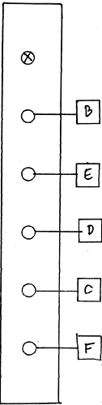

|
Wiring Diagram: Ring Modulator
 PC BOARD No. R6 (marked "RING" by hand) Note: PC Board "R6" is composed of two independent 1" wide circuits. These are pre-wired at the factory to be either two RING MODULATORS, one RING and a VCA, or two VCAs. It is important to keep the wiring separate. A common mistake is to wire to wire a connection to the wrong half of the board, since the two halves have duplicate lettering... Mistakes can be avoided by keeping all wiring localized within the one inch space taken up by the module on the PANEL and the PC board. Another point of confusion arises when doing the power supply wiring. On board power supply jumpers (for X and Y) are already installed, resulting in oval pads that only have a single hole and not two as is normal. Power wiring should therefore be done first to one of the Oval Pads, then from the second oval pad on the second half of the board. SELF TEST PROCEDURE Plug a sine wave or other, into the X input. Monitor the output. Progressively turn the knob CW. You should hear the amplitude of the tone grow dim, and almost null out at a position almost fully clock-wise. Leave the knob set at the null. Plug a CV (either a slow envelope or a manual CV) into "VC-X". As the CV rises from 0 to +5V, the sine or other wave should rise in amplitude. (This is by the way a subsidiary use of the RING, as a VCA. However there will always be a residual signal, even at the best null point, and therefore the RING is usually used as a VCA in emergencies...). Unpatch X and VC-X. Patch the sine into "Y", Only a faint sound should be heard, if any (the "Y" input is internally nulled). Should the null have been mis-aligned in transit or kitbuilding, you may restore it by varying the topmost trimmer (furthest trimmer away from the potentiometer). Now plug the CV into "VC-Y". As with VC-X, this input brings out the tone present at "Y". Normal use of the RING is with the carrier frequency at "Y" and the signal at "X". Try this. CV into either VC-X or VC-Y as before allows the effect to be moved from nulled balanced modulation to amplitude modulation. Turning the knob also does this. Many subtle effects can therefore be voltage or manually controlled. As they say in cooking, season to taste...
|